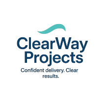

Implementation advisory for SaaS services leaders and buyers

About ClearWay Projects
ClearWay Projects is a pre-implementation advisory practice helping B2B SaaS buyers and SaaS professional services leaders reduce implementation risk, accelerate time-to-value, and prevent avoidable delivery chaos.
Most implementation failures start before kickoff
Most software implementations don’t fail because the technology is wrong. They fail because implementation readiness is assumed — and misalignment shows up too late.
ClearWay Projects exists to surface SaaS implementation risk before kickoff, when it’s still fixable and far less expensive.
Across growing SaaS organizations, the same pattern repeats: Sales closes quickly. Delivery inherits complexity. Customers expect outcomes. Teams aren’t ready. By the time anyone admits there’s a problem, schedules slip, confidence erodes, and everyone is managing symptoms instead of causes.
ClearWay was built to intervene earlier — at the point where risk is forming, not after it’s already cost time, money, and credibility.
The ClearWay point of view
Implementation risk is rarely technical. It’s structural — and it lives in the gaps between:
- What was sold and what was scoped
- What customers expect and what delivery teams are resourced to execute
- What leaders assume and what implementation teams actually know
Most organizations don’t lack effort or intent. They lack visibility. ClearWay focuses on the moment before delivery begins, where assumptions can still be tested, stakeholders aligned, and risks named without blame.
We don’t replace professional services teams. We help ensure they can succeed — with clearer expectations, stronger handoffs, and a realistic path to outcomes.
About Debbie O’Meara
I’m Debbie O’Meara, founder of ClearWay Projects. I’ve spent 20+ years inside SaaS companies leading software implementations, building and scaling professional services organizations, and working at the fault line between Sales promises and delivery reality.
ClearWay Projects is focused on pre-implementation advisory — surfacing implementation risk before kickoff, assessing implementation readiness, and aligning stakeholders early so delivery teams can execute with fewer surprises and faster time-to-value.
I founded ClearWay to bring senior, operator-level judgment to teams that need clear answers before commitments are locked — whether you’re a SaaS buyer preparing to implement new software or a SaaS provider scaling delivery capacity ahead of a surge.
Who we work with
ClearWay supports two groups facing the same risk from different angles:
SaaS buyers
Teams preparing to implement new software who want to:
- Assess real implementation readiness before commitments are locked
- Avoid delays, rework, and adoption stalls
- Align stakeholders early (before governance becomes a firefight)
SaaS providers
Growing B2B SaaS companies where delivery maturity hasn’t caught up to sales velocity — and where implementation capacity, process, and handoffs need to scale without burning out the team.
In both cases, the goal is the same: clarity before commitment.
How ClearWay Projects is different
ClearWay is intentionally pre-implementation focused. We don’t sell delivery capacity. We don’t parachute in mid-project. We help you see risk early and act before it becomes customer pain.
Our work is advisory, practical, and diagnostic:
- Making hidden risks visible (scope, stakeholders, capacity, governance)
- Stress-testing assumptions in the plan, the handoff, and the resourcing model
- Aligning teams around reality, not optimism
- Creating a clear, shared starting point before execution begins
Signature tool: the Implementation Risk Assessment Scorecard
If you want a fast, practical way to identify risk before kickoff, start with the Implementation Risk Assessment Scorecard — a lightweight assessment that helps teams spot the most common failure points early.
What we see before most teams do
- “Standard implementations” sold into non-standard organizations
- Kickoff dates set before delivery capacity is understood
- Adoption risk mistaken for a training problem
- Stakeholder misalignment hidden behind optimism
These signals are easy to miss — until they aren’t. ClearWay exists to help teams see them early.
Why this matters
- Delivery moves faster
- Teams work with less friction
- Customers reach value sooner
- Trust is preserved instead of repaired
If you’ve ever thought, “This implementation feels harder than it should,” you’re probably right. And it usually starts long before kickoff.
Try the Implementation Risk Assessment Scorecard for a quick self-evaluation. Or contact us for more depth.